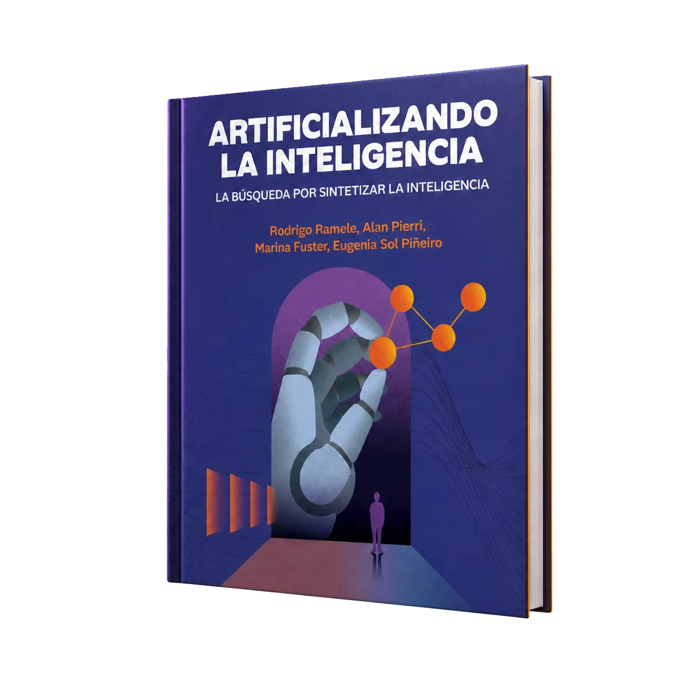

Inteligencia artificial, sin humo
Artificializando
la Inteligencia
Una mirada rigurosa y cercana para comprender cómo aprende una máquina, desde los fundamentos hasta la IA generativa.
- 336 páginas
- IA práctica
- Deep Learning moderno
- Actualizado para 2026

Por qué este libro
Una guía para artificializar la inteligencia.
La Inteligencia Artificial se ha convertido en un término ampliamente difundido, pasando de ser un concepto propio del ámbito informático y académico a convertirse en un tema de discusión cotidiano en la ronda de mate.
Sin embargo, ¿qué significa “Inteligencia Artificial”? Algunos quizás poseen una idea bien formada; otros, tal vez, se enfrentan a una diversidad de enfoques y aplicaciones que hacen difícil discernir qué camino tomar para satisfacer esa curiosidad por aprender.
En este libro el lector será guiado a través de los principales conceptos que estructuran el campo de la Inteligencia Artificial. El recorrido abarca desde los enfoques clásicos y los algoritmos genéticos hasta los primeros modelos basados en el perceptrón, incorporando nociones fundamentales de ciencia de datos, optimización y evaluación de modelos.
Sobre estas bases, se construye una introducción al Aprendizaje Automático y al Aprendizaje Profundo, transitando modelos como las redes de Hopfield, la regla de Oja y los mapas autoorganizados de Kohonen, hacia arquitecturas más complejas, como las Redes Convolucionales, los Autoencoders y las Redes Generativas Adversariales, hasta llegar a enfoques modernos como los Transformers.
Asimismo, veremos la aplicación de estos conceptos en contextos de la industria e invitaremos a reflexionar sobre los desafíos y limitaciones que presentan hasta los modelos más complejos. De este modo, el lector podrá transitar el puente entre los fundamentos teóricos y los sistemas que hoy definen el estado del arte, en un camino atravesado por una pregunta fundamental: ¿hasta dónde hemos llegado en nuestra búsqueda por artificializar la inteligencia?
Dentro del libro
De los fundamentos
al estado del arte.
Un recorrido progresivo para entender las ideas, la matemática y las decisiones de implementación que sostienen la inteligencia artificial actual.
ILos iniciosCapítulos 1–2
- 1 Introducción19
- 1.1 ¿Qué es la inteligencia?19
- 1.2 Los orígenes20
- 1.2.1 El Simbolismo21
- 1.2.2 Nos Vemos en Dartmouth21
- 1.2.3 El procesamiento del lenguaje23
- 1.2.4 GPS, General Problem Solver23
- 1.2.5 Informática en Acción24
- 1.2.6 El enfoque evolutivo24
- 1.2.7 Sistemas Expertos25
- 1.2.8 El abordaje Conexionista25
- 1.2.9 Aprendizaje Automático26
- 1.2.10 Aprendizaje Profundo27
- 1.2.11 La Inteligencia Artificial en la Argentina27
- 1.3 Definición de Inteligencia29
- 2 Conceptos Preliminares33
- 2.1 Generales33
- 2.1.1 Matriz de datos33
- 2.1.2 Características34
- 2.1.3 Aprendizaje y Generalización34
- 2.1.4 Nomenclatura34
- 2.1.5 Métodos de aprendizaje35
- 2.1.6 Las cuatro tareas35
- 2.2 Un pelín de Álgebra36
- 2.2.1 Combinación Lineal36
- 2.2.2 Proyección36
- 2.2.3 Plano36
- 2.2.4 Matriz Ortonormal37
- 2.2.5 Autovalores y Autovectores38
- 2.2.6 Regularización41
- 2.3 Teoría de la Información42
- 2.4 Quiero más47
IIAlgoritmos de búsquedaCapítulos 3–4
- 3 Inteligencia Artificial Clásica51
- 3.1 Agente51
- 3.1.1 Ambientes52
- 3.1.2 Conceptos Principales53
- 3.2 La importancia de la búsqueda54
- 3.3 Métodos de Búsqueda54
- 3.3.1 Eficiencia57
- 3.3.2 Estrategias de Búsqueda57
- 3.3.3 Representación del Problema57
- 3.4 Métodos de Búsqueda Desinformados59
- 3.4.1 Breadth First Search60
- 3.4.2 Uniform Cost Search60
- 3.4.3 Depth First Search60
- 3.4.4 Estados repetidos y Backtracking61
- 3.5 Métodos de Búsqueda Informados62
- 3.5.1 Local Greedy Search62
- 3.5.2 A*65
- 3.5.3 Iterative Deepening A*65
- 3.5.4 Heuristic Path Planning65
- 3.5.5 Ejemplo de juego: Sokoban66
- 3.6 Algoritmos de Mejoramiento Iterativo67
- 3.6.1 Hill Climbing67
- 3.6.2 Simulated Annealing69
- 3.6.3 Beam Search70
- 4 Algoritmos Genéticos71
- 4.1 Definiciones Evolutivas71
- 4.2 Crossover76
- 4.2.1 Cruce de un punto77
- 4.2.2 Cruce de dos puntos77
- 4.2.3 Cruce anular77
- 4.2.4 Cruce uniforme77
- 4.3 Mutación77
- 4.3.1 Generando generaciones78
- 4.4 Quiero más79
IIIPerceptrónCapítulos 5–8
- 5 Optimización Matemática85
- 5.1 La latita de Coca85
- 5.2 El problema de optimización87
- 5.3 El método simplex88
- 5.4 Optimización no lineal sin restricciones89
- 5.4.1 Definiciones preliminares90
- 5.4.2 Gradiente Descendente93
- 5.4.3 Método de Newton94
- 5.4.4 Métodos Cuasi Newton94
- 5.4.5 Métodos de Direcciones Conjugadas95
- 5.4.6 Métodos de Gradientes Conjugados, 195295
- 5.4.7 El método de Powell 196495
- 5.4.8 Gradiente Descendente Estocástico96
- 6 El modelo de Neurona99
- 6.1 La bioinspiración100
- 6.2 Separabilidad lineal101
- 6.2.1 Aprendizaje Hebbiano105
- 6.2.2 Algoritmo del Perceptrón Simple107
- 6.2.3 Perceptrón Lineal108
- 6.2.4 Aprendizaje en el Perceptrón Simple No Lineal111
- 7 La era del Conexionismo115
- 7.1 Perceptrón Multicapa115
- 7.1.1 Propagación hacia adelante117
- 7.1.2 Propagación hacia atrás119
- 7.2 Algoritmo del Perceptrón Multicapa123
- 7.2.1 Aprendizaje Incremental125
- 7.2.2 Aprendizaje por lotes125
- 7.3 Variantes de optimización126
- 7.3.1 Momentum126
- 7.3.2 Tasa de aprendizaje adaptativa126
- 7.3.3 RMSProp127
- 7.3.4 Adam128
- 7.4 Arquitectura del Perceptrón Multicapa129
- 7.5 La promesa detrás de las redes neuronales130
- 8 Métricas de Evaluación135
- 8.1 Identificar el patrón de manera correcta135
- 8.2 Métricas estándar136
- 8.2.1 Matriz de Confusión136
- 8.2.2 Métricas138
- 8.2.3 Ajuste, subajuste y sobreajuste140
- 8.2.4 Validación Cruzada141
IVAutomatizando el AprendizajeCapítulos 9–13
- 9 Aprendizaje Automático145
- 9.1 Redefiniendo Aprendizaje145
- 9.2 Métodos de Aprendizaje146
- 9.3 Pipeline de Machine Learning147
- 9.3.1 El problema Inverso149
- 9.4 Quiero más151
- 10 Transformaciones en los datos153
- 10.1 Estructura interna de los datos153
- 10.1.1 Clustering y Agrupamientos155
- 10.2 Análisis de Componentes Principales156
- 10.2.1 Preliminares157
- 10.2.2 Transformación PCA158
- 10.3 Quiero más163
- 11 Red de Kohonen165
- 11.1 Mapa Autoorganizado165
- 11.1.1 Aprendizaje Competitivo166
- 11.1.2 Arquitectura166
- 11.1.3 Algoritmo168
- 12 Red de Hopfield173
- 12.1 Hopfield 1982174
- 12.1.1 Memoria Asociativa175
- 12.1.2 Estabilidad178
- 12.1.3 Convergencia179
- 12.1.4 Limitaciones180
- 13 Modelo de Oja y Sanger181
- 13.1 La búsqueda del poder de síntesis181
- 13.2 Red de Oja182
- 13.2.1 Implementación186
- 13.3 Red de Sanger187
VDeep LearningCapítulos 14–19
- 14 Deep Brain191
- 14.1 Biomimesis neuronal191
- 14.1.1 Grasa inteligente192
- 14.1.2 Una neuro-computadora193
- 14.2 La Neurona Recargada196
- 14.2.1 ¿Cómo dispara una neurona?196
- 14.2.2 Una Computadora Nanotecnológica197
- 14.2.3 Conducción a Saltos199
- 14.2.4 Sinapsis200
- 15 Aprendizaje Profundo203
- 15.1 Guía para el tío y la tía que pregunta204
- 15.2 Los cuatro pilares de Deep Learning206
- 15.2.1 Profundidad206
- 15.2.2 Aprendizaje de la Representación209
- 15.2.3 Datasets210
- 15.2.4 GPUs211
- 16 Autoencoders215
- 16.1 Autoasociadores215
- 16.1.1 Arquitectura215
- 16.1.2 Autoencoder Lineal217
- 16.1.3 Detección de Outliers220
- 16.1.4 Denoising Autoencoder221
- 16.1.5 Contractive Autoencoder222
- 16.1.6 Sparse Autoencoder222
- 16.2 Autoencoder Generativo223
- 16.2.1 La estructura del espacio latente225
- 16.3 Variational Autoencoder226
- 16.3.1 Redes Neuronales Estocásticas227
- 16.3.2 Inferencia Variacional228
- 16.3.3 Optimizar el Autoencoder Variacional229
- 16.3.4 Backpropagation en el VAE235
- 16.4 Apéndice236
- 17 Convolutional Neural Networks243
- 17.1 La operación de Convolución244
- 17.1.1 Moving Average245
- 17.1.2 Padding245
- 17.2 Convolución en Imágenes247
- 17.3 Neocognitrón248
- 17.4 La Operatoria Convolucional250
- 17.4.1 Capa Convolucional250
- 17.4.2 La capa de Pooling252
- 17.4.3 Full Layer y Softmax252
- 17.4.4 Backpropagation253
- 17.5 ¿Por qué funcionan?255
- 17.6 Inteligibilidad255
- 17.7 Arquitecturas Reusables256
- 17.7.1 ResNet257
- 17.7.2 U-Net258
- 17.8 Más allá de las imágenes259
- 17.9 Quiero más259
- 18 Generative Adversarial Networks261
- 18.1 Generando gatitos261
- 18.2 Juego MinMax264
- 18.3 Colapso Modal265
- 18.4 El gran simulador266
- 19 Transformers267
- 19.1 Las Redes Recurrentes268
- 19.1.1 Long Short-Term Memory269
- 19.2 Arquitectura de un Transformer270
- 19.3 Preprocesamiento273
- 19.4 Attention is all you need275
- 19.4.1 Una tabla de acceso indexado continua275
- 19.4.2 Kernel Smoothing277
- 19.4.3 Atención Cognitiva278
- 19.4.4 Cálculo de Atención278
- 19.5 Entrenamiento280
- 19.6 Large Language Models281
- 19.7 Quiero más284
VIPragmatismo ProfesionalCapítulos 20–21
- 20 Del Dato a la Industria287
- 20.1 El Análisis Cuantitativo287
- 20.2 ETLs y EDAs291
- 20.3 Falacias de la Ciencia de Datos292
- 20.4 Inteligencia Artificial y la Frontera Digital294
- 21 Guía para el apurado297
- 21.1 Condimentos de una Red Neuronal297
- 21.1.1 Transformación de los datos298
- 21.1.2 Balanceo de clases299
- 21.1.3 Funciones de Costo299
- 21.1.4 Funciones de Activación299
- 21.1.5 ¿Cómo cocino un panqueque? con una Red Neuronal299
- 21.2 Infraestructura de Software302
- 21.3 Quiero más306
- Index331
Referencia bibliográfica
Cómo citar este libro.
Copiá esta referencia en formato BibTeX para incluirla en tus trabajos, artículos o materiales académicos.
@book{alai2026,
title={Artificializando La Inteligencia},
author={Ramele, Rodrigo and Pierri, Alan and Fuster, Marina and Piñeiro, Eugenia Sol},
year={2026},
edition={1st},
note={\url{https://artificializandolainteligencia.github.io/}},
publisher={Editorial Dunken, Buenos Aires, Argentina}
}El próximo capítulo empieza acá
Entender la IA cambia
cómo imaginamos el futuro.
Una base sólida para quienes quieren construir, enseñar o decidir con inteligencia artificial.